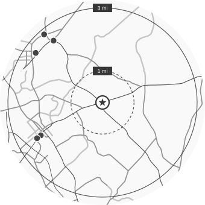
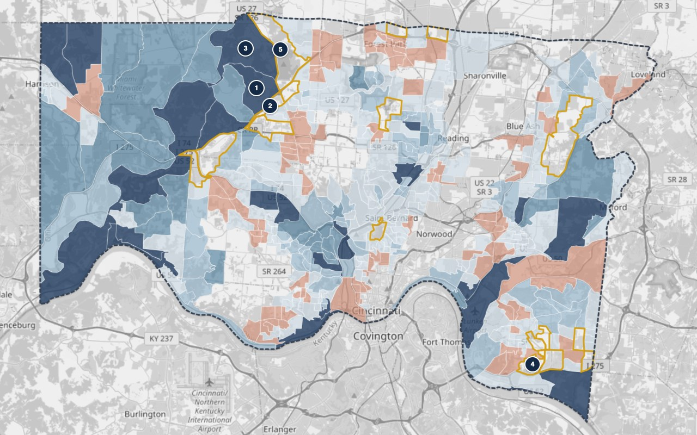

Find the Opportunity with Predictive Location Analytics
Stop choosing locations on traffic counts, visibility, and access alone. Start adding predictive analytics to understand market demand and opportunity.
Traffic counts, visibility, and access are only the first step in assessing a location.
The wrong location is one of the main reasons a business struggles or even fails. How do you make sure that your site will make money and avoid loss?
Simple. Identify the right location using predictive analytics and avoid the potential risk of the wrong location.
At AniPoint, we use data, advanced statistics, and clear communication to help organizations truly understand market demand and uncover opportunities without losing time and effort.

How We Help, From First Look to Financing
Our reports measure demand and opportunity across markets and sites. They don't confirm that a property is for sale, guarantee results, or replace zoning, utility and site-access checks with the municipality and your engineer.
The Analytics Behind Our Studies
Samples from a Hamilton County, Ohio market study. Pick an analysis or open it for a sample scorecard.

Why Our Numbers Hold Up
Built for your question
Every study starts from your goals, whether that's ranking a region, vetting one address or clearing underwriting.
Learns from what failed
We study locations that closed, not just the success stories, so your report flags the warning signs that sink a site.
Ranges and a downside case
Every forecast comes with a likely range and a bad-year scenario, so you can plan for both.
Built and reviewed by hand
An experienced, thorough analyst builds and checks every model, and can walk you or your lender through any number in the report.
Have a site or market in mind?
Start with an estimate, or tell us what you're deciding and we'll help you get a clearer picture.